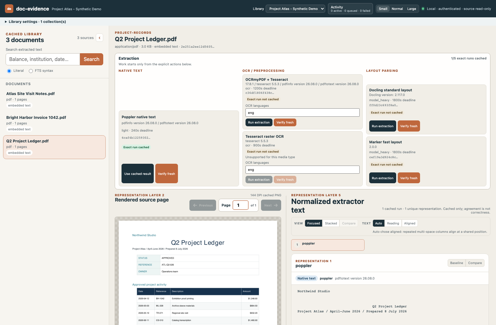

Your documents stay local
The desktop application runs its own authenticated local engine. It does not require hosted document storage, analytics, or a remote-model fallback.
Local-first · open source · original documents stay untouched
Doc Evidence inventories, extracts, searches, and compares documents on your computer. Every result stays connected to its source file and page, while machine observations remain distinct from reviewed facts.
The desktop application runs its own authenticated local engine. It does not require hosted document storage, analytics, or a remote-model fallback.
Collections are read-only. Content is identified by SHA-256, paths remain aliases, and generated artifacts live separately from source bytes.
Extracted text and candidate observations retain file and page provenance. Automated agreement never masquerades as human confirmation.
The actual workspace
Browse a document collection, inspect the rendered original, and compare cached text representations without losing file or page context. This capture uses three generated demo documents—no private records.

One durable local library
Track immutable content across one or more explicitly authorized folders without confusing renamed paths for new evidence.
Use bundled Poppler, Tesseract, and OCRmyPDF tools offline, with exact extractor versions and cache identity retained.
Inspect source pages beside native text and OCR output, collapse exact matches, and focus on numeric or textual disagreements.
Queue, cancel, retry, and recover extraction work while keeping attempts, warnings, timing, and resulting artifacts inspectable.
Signed desktop builds
Doc Evidence 0.5.1 is available for both supported platforms. Installer signatures and exact hashes are published with the release.
No system Python, Homebrew, development tools, or internet connection is required after installation.
Built in public
Doc Evidence is Apache-2.0 licensed. Its architecture, data contracts, desktop packaging manifests, release validation, and synthetic fixtures are available in the public repository.
Explore the source on GitHub →